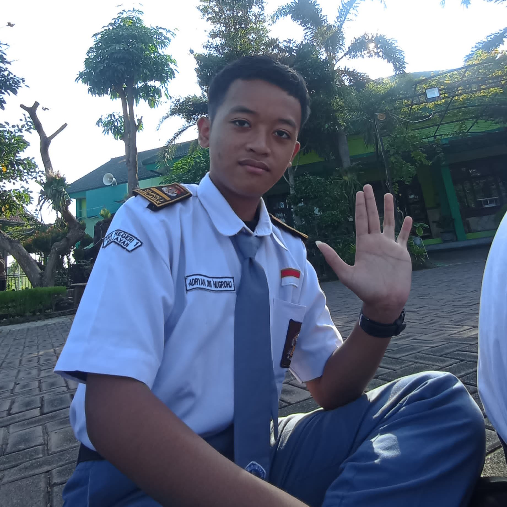
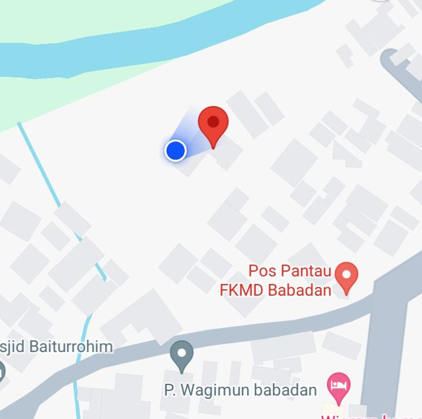
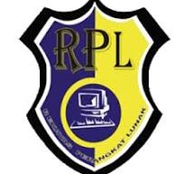

Halo, perkenalkan nama saya Adryan Dwi Nugroho. Saya berumur 16 tahun, lahir pada tanggal 1 September 2007. Saya lahir di Madiun Jawa Timur.
Saya masih baru dalam hal dunia perCodingan, saya baru menekuninya saat saya masuk ke sekolah kejuruan. Saya memilih jurusan Rekayasa Perangkat Lunak agar bisa mengeksplor dan mendapat bantuan dalam belajar Coding. Saya harap dengan bersekolah disini bisa menjadi jalan saya untuk menjadi sukses.

Saya tinggal di Dusun Babadan, Desa Tawangrejo, Kecamatan Gemarang, Kabupaten Madiun, Jawa Timur. Tempat saya tinggal di daerah pedesaan yang sejuk dan asri. Lingkungannya juga bersih dan nyaman, jauh dari polusi asap kendaraan dan limbah pabrik.
Yaa desa tempat saya tinggal sangat nyaman lah pokoknya, dengan kesejukan alami dan pemandangan indah yang membentang membuat saya sangat betah tinggal disana, lagi pula dengan minimnya polusi daerah ini juga baik untuk kesehatan saya. yaa mungkin hanya lumayan jauh saja dari sekolahan.

RPL adalah singkatan dari Rekayasa Perangkat Lunak dan merupakan sebuah jurusan yang ada di Sekolah Menengah Kejuruan (SMK). RPL adalah sebuah jurusan yang mempelajari dan mendalami semua cara-cara pengembangan perangkat lunak termasuk pembuatan, pemeliharaan, manajemen, organisasi pengembangan perangkat lunak dan manajemen kualitas. Bukan hanya itu RPL juga berhubungan dengan software komputer mulai dari pembuatan website, aplikasi, game dan semua yang berhubungan dengan pemograman dengan menguasai bahasa pemograman tersebut. Intinya RPL tidak akan jauh-jauh dari tiga hal yaitu coding, Desain dan Algoritma yang akan menjadi kunci keberhasilan rekayasa perangkat lunak tersebut.
Jurusan ini masih menjadi hal yang asing untuk saya, walaupun saya sudah 1 semester berada di jurusan ini banyak hal yang masih saya bingungi entah itu teori atau praktik. Yah disini saya tidak ingin panjang lebar saya hanya berharap jurusan ini bisa menjadi jurusan yang banyak diminati dan diketahui banyak orang karena saya sering ditanyai "jurusanmu apa?" dan ya karena tidak semua orang tau akhirnya saya jawab "jurusan komputer" dan yang pasti bukan hanya itu yang membuat saya ingin jurusan ini dikenal salah satunya saya ingin mudah dapat pekerjaan, kalau jurusan ini banyak dikenalkan gampang kalau ditanya ini itu.
Berikut nasihat saya:
"PANTANG MENYERAH, MERDEKA!! MERDEKA!! MERDEKAA!!!"